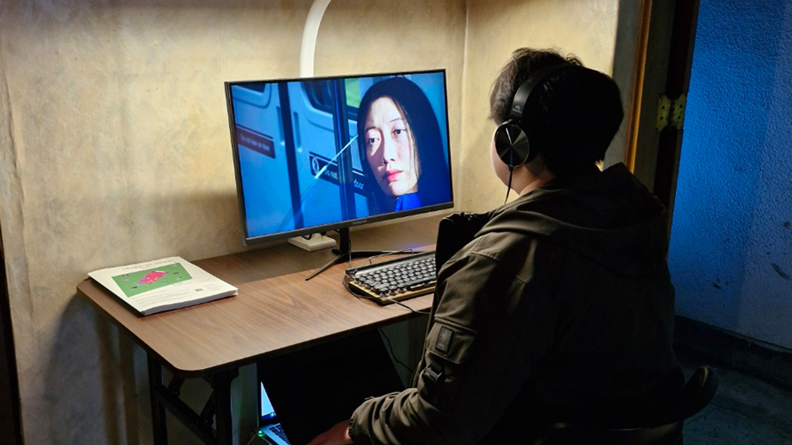
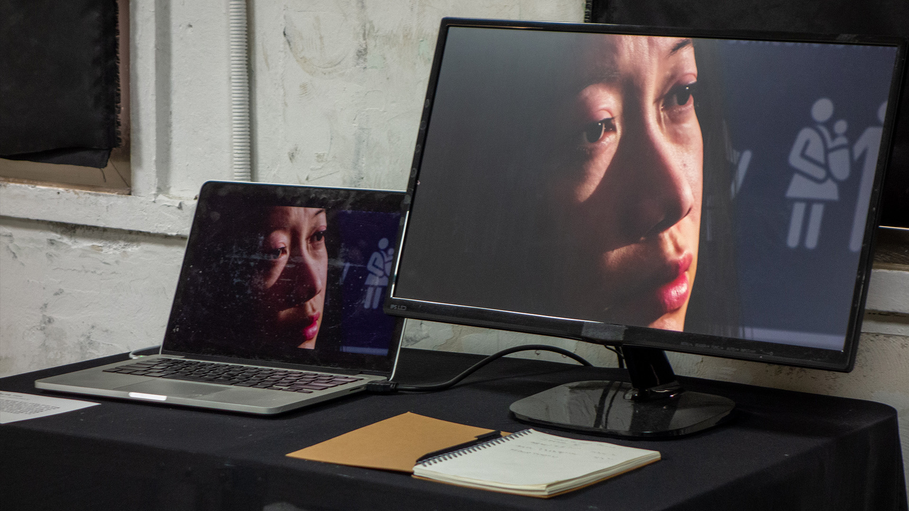

Seon-a's Family is a single-channel narrative media work about conflict, distance, and reconciliation. AI-assisted imagery and digital-human processes are used to construct a family's story across different remembered or imagined moments.
The viewer follows Seon-a's story through shifting representations of family members and time. The generated imagery is presented as narrative material, not as documentary evidence.
I directed and technically developed the moving-image work, bringing generative and digital-human production methods into a controlled sequence of scenes for installation presentation.
The production question was how to use mediated faces and temporal discontinuity without losing emotional readability. Story and visual continuity remained more important than the novelty of individual generated shots.

